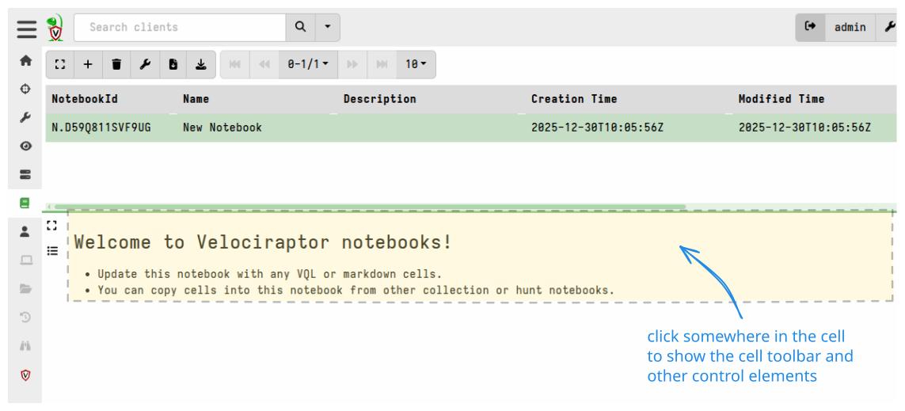
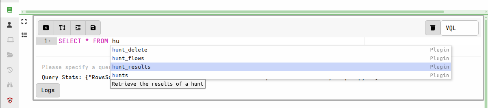

Creating Your First Notebook
This walkthrough shows you how to create a notebook, add cells, and run VQL queries in the Velociraptor GUI.
Create a notebook
-
Select Notebooks from the sidebar menu, then select Add Notebook .
-
Give the notebook a name and a description, then submit. The new notebook appears in the notebook list.
-
Click the notebook to open it. You will see a single markdown cell with a welcome message.


Edit a cell
-
Click the cell to give it focus. When it has focus, the cell control toolbar appears above it.
-
Click the Edit Cell button to edit the cell contents.

You can change a cell’s type between Markdown and VQL at any time
using the dropdown on the right side of the cell toolbar. A Markdown
cell displays formatted text. A VQL cell runs a query and shows the
results.
A notebook consists of a sequence of cells. When a cell is not in focus it has no visible decorations, so the document appears as a seamless whole. You must click a cell to bring it into focus before you can see its controls.

Add a VQL cell
-
Click the Add Cell button . A dropdown menu offers the types of cell you can add.
-
Select VQL. A new VQL cell appears above the current cell.
-
Click Edit Cell to open the cell editor.


As you type, the GUI offers context-sensitive suggestions for VQL keywords, plugins, and functions. Use the up and down arrow keys to navigate, and press Enter or Tab to select a suggestion. Press “?” at any time to see all possible completions.

Run a query
Type the following VQL into the cell:
SELECT * FROM info()

The query returns basic information about the Velociraptor server.
VQL suggestions adapt to where you are in the statement. For example,
plugins that only make sense after a FROM clause are suggested only
when the cursor is positioned after one.
What you have created
The notebook you just created is a Global Notebook. It lives in the notebook list until you delete it. It is visible only to you unless you share it.
From here you can:
- Add more cells and build a report
- Explore the templates page to learn how to create your own notebook templates
- Read about sharing notebooks with other users
- Return to the notebooks overview for a conceptual explanation of the notebook system